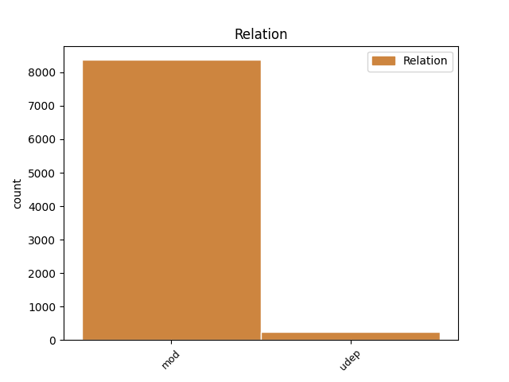
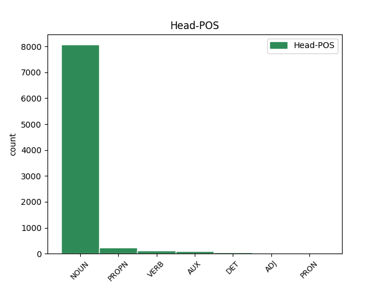
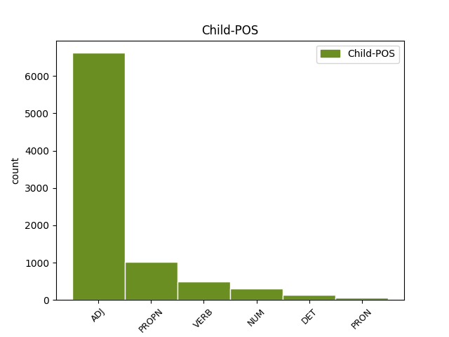

Distribution of features within this leaf



Agreement Rules sorted by frequency.
- When the dependent token is the modifer(mod) of the head token, and the dependent token is ADJ.
1 Međutim _ _ _ _ 0 _ _ _
2 , _ _ _ _ 0 _ _ _
3 kao _ _ _ _ 0 _ _ _
4 što _ _ _ _ 0 _ _ _
5 lagano _ _ _ _ 0 _ _ _
6 , _ _ _ _ 0 _ _ _
7 ali _ _ _ _ 0 _ _ _
8 sigurno _ _ _ _ 0 _ _ _
9 napreduje _ _ _ _ 0 _ _ _
10 širenje _ _ _ _ 0 _ _ _
11 nuklearnih _ _ _ _ 0 _ _ _
12 centrala _ _ _ _ 0 _ _ _
13 po _ _ _ _ 0 _ _ _
14 svetu _ _ _ _ 0 _ _ _
15 usred _ _ _ _ 0 _ _ _
16 ekonomske _ _ _ _ 0 _ _ _
17 isplativosti _ _ _ _ 0 _ _ _
18 dogod _ _ _ _ 0 _ _ _
19 nema _ _ _ _ 0 _ _ _
20 akcidenata _ _ _ _ 0 _ _ _
21 , _ _ _ _ 0 _ _ _
22 tako _ _ _ _ 0 _ _ _
23 će _ _ _ _ 0 _ _ _
24 barem _ _ _ _ 0 _ _ _
25 zasad _ _ _ _ 0 _ _ _
26 i _ _ _ _ 0 _ _ _
27 Internet _ _ _ _ 0 _ _ _
28 stvari _ _ _ _ 0 _ _ _
29 nastaviti _ _ _ _ 0 _ _ _
30 da _ _ _ _ 0 _ _ _
31 postaje _ _ _ _ 0 _ _ _
32 realnost _ _ _ _ 0 _ _ _
33 , _ _ _ _ 0 _ _ _
34 dobrim _ _ _ _ 0 _ _ _
35 delom _ _ _ _ 0 _ _ _
36 i _ _ _ _ 0 _ _ _
37 zato _ _ _ _ 0 _ _ _
38 što _ _ _ _ 0 _ _ _
39 su _ _ _ _ 0 _ _ _
40 mlađe _ _ _ _ 0 _ _ _
41 generacije _ _ _ _ 0 _ _ _
42 već _ _ _ _ 0 _ _ _
43 od _ _ _ _ 0 _ _ _
44 malena _ _ _ _ 0 _ _ _
45 okružene _ _ _ _ 0 _ _ _
46 takvim _ _ _ _ 0 _ _ _
47 tehnološkim tehnološki ADJ Agpmsiy Case=Ins|Definite=Def|Degree=Pos|Gender=Masc|Number=Sing 48 mod _ _
48 konceptom koncept NOUN Ncmsi Case=Ins|Gender=Masc|Number=Sing 0 _ _ _
49 , _ _ _ _ 0 _ _ _
50 pa _ _ _ _ 0 _ _ _
51 i _ _ _ _ 0 _ _ _
52 delimično _ _ _ _ 0 _ _ _
53 integrisane _ _ _ _ 0 _ _ _
54 u _ _ _ _ 0 _ _ _
55 njega _ _ _ _ 0 _ _ _
56 . _ _ _ _ 0 _ _ _
1 Profesionalni _ _ _ _ 0 _ _ _
2 hakeri _ _ _ _ 0 _ _ _
3 poput _ _ _ _ 0 _ _ _
4 njega _ _ _ _ 0 _ _ _
5 , _ _ _ _ 0 _ _ _
6 kao _ _ _ _ 0 _ _ _
7 i _ _ _ _ 0 _ _ _
8 razni _ _ _ _ 0 _ _ _
9 drugi _ _ _ _ 0 _ _ _
10 stručnjaci _ _ _ _ 0 _ _ _
11 za _ _ _ _ 0 _ _ _
12 bezbednost _ _ _ _ 0 _ _ _
13 u _ _ _ _ 0 _ _ _
14 IT _ _ _ _ 0 _ _ _
15 oblasti _ _ _ _ 0 _ _ _
16 svake _ _ _ _ 0 _ _ _
17 godine _ _ _ _ 0 _ _ _
18 prisustvuju _ _ _ _ 0 _ _ _
19 Blek Blek PROPN Npmsn Case=Nom|Gender=Masc|Number=Sing 22 mod _ _
20 Het _ _ _ _ 0 _ _ _
21 bezbednosnoj _ _ _ _ 0 _ _ _
22 konferenciji konferencija NOUN Ncfsd Case=Dat|Gender=Fem|Number=Sing 0 _ _ _
23 , _ _ _ _ 0 _ _ _
24 koja _ _ _ _ 0 _ _ _
25 se _ _ _ _ 0 _ _ _
26 upravo _ _ _ _ 0 _ _ _
27 bavi _ _ _ _ 0 _ _ _
28 ranjivošću _ _ _ _ 0 _ _ _
29 modernih _ _ _ _ 0 _ _ _
30 tehnologija _ _ _ _ 0 _ _ _
31 . _ _ _ _ 0 _ _ _
1 Međutim _ _ _ _ 0 _ _ _
2 , _ _ _ _ 0 _ _ _
3 kao _ _ _ _ 0 _ _ _
4 što _ _ _ _ 0 _ _ _
5 lagano _ _ _ _ 0 _ _ _
6 , _ _ _ _ 0 _ _ _
7 ali _ _ _ _ 0 _ _ _
8 sigurno _ _ _ _ 0 _ _ _
9 napreduje napredovati VERB Vmr3s Mood=Ind|Number=Sing|Person=3|Tense=Pres|VerbForm=Fin 0 _ _ _
10 širenje _ _ _ _ 0 _ _ _
11 nuklearnih _ _ _ _ 0 _ _ _
12 centrala _ _ _ _ 0 _ _ _
13 po _ _ _ _ 0 _ _ _
14 svetu _ _ _ _ 0 _ _ _
15 usred _ _ _ _ 0 _ _ _
16 ekonomske _ _ _ _ 0 _ _ _
17 isplativosti _ _ _ _ 0 _ _ _
18 dogod _ _ _ _ 0 _ _ _
19 nema nemati VERB Vmr3s Mood=Ind|Number=Sing|Person=3|Tense=Pres|VerbForm=Fin 9 mod _ _
20 akcidenata _ _ _ _ 0 _ _ _
21 , _ _ _ _ 0 _ _ _
22 tako _ _ _ _ 0 _ _ _
23 će _ _ _ _ 0 _ _ _
24 barem _ _ _ _ 0 _ _ _
25 zasad _ _ _ _ 0 _ _ _
26 i _ _ _ _ 0 _ _ _
27 Internet _ _ _ _ 0 _ _ _
28 stvari _ _ _ _ 0 _ _ _
29 nastaviti _ _ _ _ 0 _ _ _
30 da _ _ _ _ 0 _ _ _
31 postaje _ _ _ _ 0 _ _ _
32 realnost _ _ _ _ 0 _ _ _
33 , _ _ _ _ 0 _ _ _
34 dobrim _ _ _ _ 0 _ _ _
35 delom _ _ _ _ 0 _ _ _
36 i _ _ _ _ 0 _ _ _
37 zato _ _ _ _ 0 _ _ _
38 što _ _ _ _ 0 _ _ _
39 su _ _ _ _ 0 _ _ _
40 mlađe _ _ _ _ 0 _ _ _
41 generacije _ _ _ _ 0 _ _ _
42 već _ _ _ _ 0 _ _ _
43 od _ _ _ _ 0 _ _ _
44 malena _ _ _ _ 0 _ _ _
45 okružene _ _ _ _ 0 _ _ _
46 takvim _ _ _ _ 0 _ _ _
47 tehnološkim _ _ _ _ 0 _ _ _
48 konceptom _ _ _ _ 0 _ _ _
49 , _ _ _ _ 0 _ _ _
50 pa _ _ _ _ 0 _ _ _
51 i _ _ _ _ 0 _ _ _
52 delimično _ _ _ _ 0 _ _ _
53 integrisane _ _ _ _ 0 _ _ _
54 u _ _ _ _ 0 _ _ _
55 njega _ _ _ _ 0 _ _ _
56 . _ _ _ _ 0 _ _ _
1 Naime _ _ _ _ 0 _ _ _
2 , _ _ _ _ 0 _ _ _
3 2016. _ _ _ _ 0 _ _ _
4 jedan jedan NUM Mlcmsn Case=Nom|Gender=Masc|Number=Sing|NumType=Card 6 mod _ _
5 pametni _ _ _ _ 0 _ _ _
6 automobil automobil NOUN Ncmsn Case=Nom|Gender=Masc|Number=Sing 0 _ _ _
7 američkog _ _ _ _ 0 _ _ _
8 proizvođača _ _ _ _ 0 _ _ _
9 Tesla _ _ _ _ 0 _ _ _
10 Motors _ _ _ _ 0 _ _ _
11 nije _ _ _ _ 0 _ _ _
12 uspeo _ _ _ _ 0 _ _ _
13 da _ _ _ _ 0 _ _ _
14 uoči _ _ _ _ 0 _ _ _
15 razliku _ _ _ _ 0 _ _ _
16 između _ _ _ _ 0 _ _ _
17 bele _ _ _ _ 0 _ _ _
18 površine _ _ _ _ 0 _ _ _
19 prikolice _ _ _ _ 0 _ _ _
20 i _ _ _ _ 0 _ _ _
21 neba _ _ _ _ 0 _ _ _
22 i _ _ _ _ 0 _ _ _
23 došlo _ _ _ _ 0 _ _ _
24 je _ _ _ _ 0 _ _ _
25 do _ _ _ _ 0 _ _ _
26 sudara _ _ _ _ 0 _ _ _
27 sa _ _ _ _ 0 _ _ _
28 smrtnim _ _ _ _ 0 _ _ _
29 ishodom _ _ _ _ 0 _ _ _
30 . _ _ _ _ 0 _ _ _
1 Satima _ _ _ _ 0 _ _ _
2 sam biti AUX Var1s Mood=Ind|Number=Sing|Person=1|Tense=Pres|VerbForm=Fin 0 _ _ _
3 šetao _ _ _ _ 0 _ _ _
4 starim _ _ _ _ 0 _ _ _
5 Trstom Trst PROPN Npmsi Case=Ins|Gender=Masc|Number=Sing 2 udep _ _
6 u _ _ _ _ 0 _ _ _
7 nadi _ _ _ _ 0 _ _ _
8 da _ _ _ _ 0 _ _ _
9 ću _ _ _ _ 0 _ _ _
10 uhvatiti _ _ _ _ 0 _ _ _
11 senku _ _ _ _ 0 _ _ _
12 Zena _ _ _ _ 0 _ _ _
13 Kozima _ _ _ _ 0 _ _ _
14 . _ _ _ _ 0 _ _ _
1 Ulica _ _ _ _ 0 _ _ _
2 u _ _ _ _ 0 _ _ _
3 kojoj _ _ _ _ 0 _ _ _
4 smo _ _ _ _ 0 _ _ _
5 odrasli _ _ _ _ 0 _ _ _
6 , _ _ _ _ 0 _ _ _
7 i _ _ _ _ 0 _ _ _
8 koju _ _ _ _ 0 _ _ _
9 smo _ _ _ _ 0 _ _ _
10 napustili _ _ _ _ 0 _ _ _
11 , _ _ _ _ 0 _ _ _
12 da _ _ _ _ 0 _ _ _
13 bismo _ _ _ _ 0 _ _ _
14 se _ _ _ _ 0 _ _ _
15 nakon _ _ _ _ 0 _ _ _
16 tri _ _ _ _ 0 _ _ _
17 , _ _ _ _ 0 _ _ _
18 ili _ _ _ _ 0 _ _ _
19 četiri _ _ _ _ 0 _ _ _
20 decenije _ _ _ _ 0 _ _ _
21 ponovo _ _ _ _ 0 _ _ _
22 vratili _ _ _ _ 0 _ _ _
23 , _ _ _ _ 0 _ _ _
24 nije _ _ _ _ 0 _ _ _
25 ista _ _ _ _ 0 _ _ _
26 ulica _ _ _ _ 0 _ _ _
27 , _ _ _ _ 0 _ _ _
28 zatrpana _ _ _ _ 0 _ _ _
29 je _ _ _ _ 0 _ _ _
30 životima _ _ _ _ 0 _ _ _
31 koji _ _ _ _ 0 _ _ _
32 su _ _ _ _ 0 _ _ _
33 se _ _ _ _ 0 _ _ _
34 odvijali _ _ _ _ 0 _ _ _
35 u _ _ _ _ 0 _ _ _
36 našem _ _ _ _ 0 _ _ _
37 odsustvu _ _ _ _ 0 _ _ _
38 , _ _ _ _ 0 _ _ _
39 i _ _ _ _ 0 _ _ _
40 zalud _ _ _ _ 0 _ _ _
41 ćemo _ _ _ _ 0 _ _ _
42 u _ _ _ _ 0 _ _ _
43 detalju _ _ _ _ 0 _ _ _
44 sa _ _ _ _ 0 _ _ _
45 fasade _ _ _ _ 0 _ _ _
46 neke _ _ _ _ 0 _ _ _
47 kuće _ _ _ _ 0 _ _ _
48 koji _ _ _ _ 0 _ _ _
49 je _ _ _ _ 0 _ _ _
50 ostao _ _ _ _ 0 _ _ _
51 nepromenjen _ _ _ _ 0 _ _ _
52 , _ _ _ _ 0 _ _ _
53 i _ _ _ _ 0 _ _ _
54 lebdi _ _ _ _ 0 _ _ _
55 u _ _ _ _ 0 _ _ _
56 bezmerju _ _ _ _ 0 _ _ _
57 našeg _ _ _ _ 0 _ _ _
58 pamćenja _ _ _ _ 0 _ _ _
59 kao _ _ _ _ 0 _ _ _
60 parče _ _ _ _ 0 _ _ _
61 jarbola _ _ _ _ 0 _ _ _
62 nakon _ _ _ _ 0 _ _ _
63 brodoloma _ _ _ _ 0 _ _ _
64 , _ _ _ _ 0 _ _ _
65 pokušavati _ _ _ _ 0 _ _ _
66 da _ _ _ _ 0 _ _ _
67 uspostavimo _ _ _ _ 0 _ _ _
68 ulicu _ _ _ _ 0 _ _ _
69 koje koji DET Pi-fsg Case=Gen|Gender=Fem|Number=Sing|PronType=Int,Rel 71 udep _ _
70 više _ _ _ _ 0 _ _ _
71 nema nemati VERB Vmr3s Mood=Ind|Number=Sing|Person=3|Tense=Pres|VerbForm=Fin 0 _ _ _
72 . _ _ _ _ 0 _ _ _
1 Dobar _ _ _ _ 0 _ _ _
2 primer primer NOUN Ncmsn Case=Nom|Gender=Masc|Number=Sing 0 _ _ _
3 ovoga ovaj DET Pd-nsg Case=Gen|Gender=Neut|Number=Sing|PronType=Dem 2 mod _ _
4 je _ _ _ _ 0 _ _ _
5 recimo _ _ _ _ 0 _ _ _
6 aplikacija _ _ _ _ 0 _ _ _
7 Nest _ _ _ _ 0 _ _ _
8 , _ _ _ _ 0 _ _ _
9 koja _ _ _ _ 0 _ _ _
10 omogućava _ _ _ _ 0 _ _ _
11 kontrolu _ _ _ _ 0 _ _ _
12 pametnih _ _ _ _ 0 _ _ _
13 termostata _ _ _ _ 0 _ _ _
14 u _ _ _ _ 0 _ _ _
15 kući _ _ _ _ 0 _ _ _
16 preko _ _ _ _ 0 _ _ _
17 telefona _ _ _ _ 0 _ _ _
18 . _ _ _ _ 0 _ _ _
1 Da _ _ _ _ 0 _ _ _
2 li _ _ _ _ 0 _ _ _
3 će _ _ _ _ 0 _ _ _
4 mašine _ _ _ _ 0 _ _ _
5 uskoro _ _ _ _ 0 _ _ _
6 biti _ _ _ _ 0 _ _ _
7 u _ _ _ _ 0 _ _ _
8 mogućnosti _ _ _ _ 0 _ _ _
9 da _ _ _ _ 0 _ _ _
10 nam mi PRON Pp1-pd Case=Dat|Number=Plur|Person=1|PronType=Prs 12 udep _ _
11 „ _ _ _ _ 0 _ _ _
12 pročitaju pročitati VERB Vmr3p Mood=Ind|Number=Plur|Person=3|Tense=Pres|VerbForm=Fin 0 _ _ _
13 ” _ _ _ _ 0 _ _ _
14 misli _ _ _ _ 0 _ _ _
1 Pristalice _ _ _ _ 0 _ _ _
2 rumunske _ _ _ _ 0 _ _ _
3 opozicije _ _ _ _ 0 _ _ _
4 su _ _ _ _ 0 _ _ _
5 se _ _ _ _ 0 _ _ _
6 potom _ _ _ _ 0 _ _ _
7 pridružile pridružiti VERB Vmp-pf Gender=Fem|Number=Plur|Tense=Past|VerbForm=Part|Voice=Act 0 _ _ _
8 okupljenima okupljen ADJ Agpmpdy Case=Dat|Definite=Def|Degree=Pos|Gender=Masc|Number=Plur 7 udep _ _
9 i _ _ _ _ 0 _ _ _
10 iznele _ _ _ _ 0 _ _ _
11 niz _ _ _ _ 0 _ _ _
12 drugih _ _ _ _ 0 _ _ _
13 pitanja _ _ _ _ 0 _ _ _
14 -- _ _ _ _ 0 _ _ _
15 legalizaciju _ _ _ _ 0 _ _ _
16 marihuane _ _ _ _ 0 _ _ _
17 , _ _ _ _ 0 _ _ _
18 promene _ _ _ _ 0 _ _ _
19 na _ _ _ _ 0 _ _ _
20 aerodromima _ _ _ _ 0 _ _ _
21 , _ _ _ _ 0 _ _ _
22 poreze _ _ _ _ 0 _ _ _
23 na _ _ _ _ 0 _ _ _
24 automobile _ _ _ _ 0 _ _ _
25 -- _ _ _ _ 0 _ _ _
26 i _ _ _ _ 0 _ _ _
27 oslabile _ _ _ _ 0 _ _ _
28 originalnu _ _ _ _ 0 _ _ _
29 poruku _ _ _ _ 0 _ _ _
30 protesta _ _ _ _ 0 _ _ _
31 . _ _ _ _ 0 _ _ _
1 Ljudi _ _ _ _ 0 _ _ _
2 bi _ _ _ _ 0 _ _ _
3 trebalo _ _ _ _ 0 _ _ _
4 da _ _ _ _ 0 _ _ _
5 shvate _ _ _ _ 0 _ _ _
6 da _ _ _ _ 0 _ _ _
7 je _ _ _ _ 0 _ _ _
8 EU _ _ _ _ 0 _ _ _
9 prostor _ _ _ _ 0 _ _ _
10 vrednosti _ _ _ _ 0 _ _ _
11 i _ _ _ _ 0 _ _ _
12 blagostanja _ _ _ _ 0 _ _ _
13 i _ _ _ _ 0 _ _ _
14 oni _ _ _ _ 0 _ _ _
15 zaslužuju _ _ _ _ 0 _ _ _
16 da _ _ _ _ 0 _ _ _
17 budu _ _ _ _ 0 _ _ _
18 deo deo NOUN Ncmsn Case=Nom|Gender=Masc|Number=Sing 0 _ _ _
19 njega on PRON Pp3msg Case=Gen|Gender=Masc|Number=Sing|Person=3|PronType=Prs 18 mod _ _
20 -- _ _ _ _ 0 _ _ _
21 ali _ _ _ _ 0 _ _ _
22 i _ _ _ _ 0 _ _ _
23 mi _ _ _ _ 0 _ _ _
24 moramo _ _ _ _ 0 _ _ _
25 da _ _ _ _ 0 _ _ _
26 uložimo _ _ _ _ 0 _ _ _
27 određene _ _ _ _ 0 _ _ _
28 napore _ _ _ _ 0 _ _ _
29 " _ _ _ _ 0 _ _ _
30 , _ _ _ _ 0 _ _ _
31 rekao _ _ _ _ 0 _ _ _
32 je _ _ _ _ 0 _ _ _
33 Timofti _ _ _ _ 0 _ _ _
34 tokom _ _ _ _ 0 _ _ _
35 izbora _ _ _ _ 0 _ _ _
36 . _ _ _ _ 0 _ _ _
Disagree Examples:
1 " _ _ _ _ 0 _ _ _
2 Ovo _ _ _ _ 0 _ _ _
3 je _ _ _ _ 0 _ _ _
4 beskompromisna _ _ _ _ 0 _ _ _
5 borba _ _ _ _ 0 _ _ _
6 protiv _ _ _ _ 0 _ _ _
7 kriminala kriminal NOUN Ncmsg Case=Gen|Gender=Masc|Number=Sing 0 _ _ _
8 i _ _ _ _ 0 _ _ _
9 korupcije _ _ _ _ 0 _ _ _
10 , _ _ _ _ 0 _ _ _
11 koji _ _ _ _ 0 _ _ _
12 postoje postojati VERB Vmr3p Mood=Ind|Number=Plur|Person=3|Tense=Pres|VerbForm=Fin 7 mod _ _
13 u _ _ _ _ 0 _ _ _
14 svim _ _ _ _ 0 _ _ _
15 zemljama _ _ _ _ 0 _ _ _
16 , _ _ _ _ 0 _ _ _
17 ali _ _ _ _ 0 _ _ _
18 čije _ _ _ _ 0 _ _ _
19 sankcionisanje _ _ _ _ 0 _ _ _
20 zavisi _ _ _ _ 0 _ _ _
21 uglavnom _ _ _ _ 0 _ _ _
22 od _ _ _ _ 0 _ _ _
23 političke _ _ _ _ 0 _ _ _
24 volje _ _ _ _ 0 _ _ _
25 relevantnih _ _ _ _ 0 _ _ _
26 faktora _ _ _ _ 0 _ _ _
27 i _ _ _ _ 0 _ _ _
28 sposobnosti _ _ _ _ 0 _ _ _
29 institucija _ _ _ _ 0 _ _ _
30 da _ _ _ _ 0 _ _ _
31 nezavisno _ _ _ _ 0 _ _ _
32 obavljaju _ _ _ _ 0 _ _ _
33 svoj _ _ _ _ 0 _ _ _
34 rad _ _ _ _ 0 _ _ _
35 " _ _ _ _ 0 _ _ _
36 , _ _ _ _ 0 _ _ _
37 rekao _ _ _ _ 0 _ _ _
38 je _ _ _ _ 0 _ _ _
39 poslanik _ _ _ _ 0 _ _ _
40 vladajuće _ _ _ _ 0 _ _ _
41 VMRO _ _ _ _ 0 _ _ _
42 Antonio _ _ _ _ 0 _ _ _
43 Milošoski _ _ _ _ 0 _ _ _
44 za _ _ _ _ 0 _ _ _
45 SETimes _ _ _ _ 0 _ _ _
46 . _ _ _ _ 0 _ _ _
1 Poseta _ _ _ _ 0 _ _ _
2 predsednika predsednik NOUN Ncmpg Case=Gen|Gender=Masc|Number=Plur 0 _ _ _
3 SDP SDP PROPN Npmsn Case=Nom|Gender=Masc|Number=Sing 2 mod _ _
4 Beogradu _ _ _ _ 0 _ _ _
5 prošle _ _ _ _ 0 _ _ _
6 nedelje _ _ _ _ 0 _ _ _
7 bila _ _ _ _ 0 _ _ _
8 je _ _ _ _ 0 _ _ _
9 vrhunac _ _ _ _ 0 _ _ _
10 neslaganja _ _ _ _ 0 _ _ _
11 , _ _ _ _ 0 _ _ _
12 jer _ _ _ _ 0 _ _ _
13 je _ _ _ _ 0 _ _ _
14 Lagumdžija _ _ _ _ 0 _ _ _
15 ignorisao _ _ _ _ 0 _ _ _
16 protivljenje _ _ _ _ 0 _ _ _
17 Komšića _ _ _ _ 0 _ _ _
18 i _ _ _ _ 0 _ _ _
19 članova _ _ _ _ 0 _ _ _
20 i _ _ _ _ 0 _ _ _
21 pristalica _ _ _ _ 0 _ _ _
22 stranke _ _ _ _ 0 _ _ _
23 njegovoj _ _ _ _ 0 _ _ _
24 podršci _ _ _ _ 0 _ _ _
25 Jeremiću _ _ _ _ 0 _ _ _
26 . _ _ _ _ 0 _ _ _
1 Novi _ _ _ _ 0 _ _ _
2 predsednik _ _ _ _ 0 _ _ _
3 Moldavije _ _ _ _ 0 _ _ _
4 , _ _ _ _ 0 _ _ _
5 64-godišnji _ _ _ _ 0 _ _ _
6 bivši _ _ _ _ 0 _ _ _
7 sudija _ _ _ _ 0 _ _ _
8 Nikolae _ _ _ _ 0 _ _ _
9 Timofti _ _ _ _ 0 _ _ _
10 , _ _ _ _ 0 _ _ _
11 obećao _ _ _ _ 0 _ _ _
12 je _ _ _ _ 0 _ _ _
13 da _ _ _ _ 0 _ _ _
14 će _ _ _ _ 0 _ _ _
15 voditi _ _ _ _ 0 _ _ _
16 zemlju _ _ _ _ 0 _ _ _
17 putem put NOUN Ncmpi Case=Ins|Gender=Masc|Number=Plur 0 _ _ _
18 pridruživanja _ _ _ _ 0 _ _ _
19 Evropi Evropa PROPN Npfsd Case=Dat|Gender=Fem|Number=Sing 17 udep _ SpaceAfter=No
20 . _ _ _ _ 0 _ _ _
1 " _ _ _ _ 0 _ _ _
2 Potrebna potreban ADJ Agpfsny Case=Nom|Definite=Def|Degree=Pos|Gender=Fem|Number=Sing 0 _ _ _
3 nam mi PRON Pp1-pd Case=Dat|Number=Plur|Person=1|PronType=Prs 2 udep _ _
4 je _ _ _ _ 0 _ _ _
5 ideja _ _ _ _ 0 _ _ _
6 da _ _ _ _ 0 _ _ _
7 ponovo _ _ _ _ 0 _ _ _
8 ujedinimo _ _ _ _ 0 _ _ _
9 društvo _ _ _ _ 0 _ _ _
10 , _ _ _ _ 0 _ _ _
11 da _ _ _ _ 0 _ _ _
12 ono _ _ _ _ 0 _ _ _
13 krene _ _ _ _ 0 _ _ _
14 napred _ _ _ _ 0 _ _ _
15 kao _ _ _ _ 0 _ _ _
16 celina _ _ _ _ 0 _ _ _
17 . _ _ _ _ 0 _ _ _
1 On _ _ _ _ 0 _ _ _
2 je _ _ _ _ 0 _ _ _
3 predodređen _ _ _ _ 0 _ _ _
4 da _ _ _ _ 0 _ _ _
5 nam mi PRON Pp1-pd Case=Dat|Number=Plur|Person=1|PronType=Prs 6 udep _ _
6 ponudi ponuditi VERB Vmr3s Mood=Ind|Number=Sing|Person=3|Tense=Pres|VerbForm=Fin 0 _ _ _
7 sve _ _ _ _ 0 _ _ _
8 svoje _ _ _ _ 0 _ _ _
9 znanje _ _ _ _ 0 _ _ _
10 i _ _ _ _ 0 _ _ _
11 stručnost _ _ _ _ 0 _ _ _
12 u _ _ _ _ 0 _ _ _
13 pogledu _ _ _ _ 0 _ _ _
14 pravde _ _ _ _ 0 _ _ _
15 za _ _ _ _ 0 _ _ _
16 ljudska _ _ _ _ 0 _ _ _
17 prava _ _ _ _ 0 _ _ _
18 " _ _ _ _ 0 _ _ _
19 , _ _ _ _ 0 _ _ _
20 rekao _ _ _ _ 0 _ _ _
21 je _ _ _ _ 0 _ _ _
22 Efrim _ _ _ _ 0 _ _ _
23 za _ _ _ _ 0 _ _ _
24 SETimes _ _ _ _ 0 _ _ _
25 . _ _ _ _ 0 _ _ _